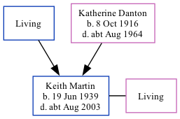

Keith John L Martin 1939 - c2003
[ Home ] | [ Calendar ] | [ Surnames Index ] | [ Family History ]The son of Thomas Martin and Katherine DantonKeith Martin, the third cousin on the father's side of Nigel Horne, was born in East Ham, London, England on Jun 19, 19391,2. He married Doris Thomas in Exeter, Devon, England around Aug 19633.
He died c. Aug 2003 in Teignbridge, Devon, England2.
Parents
- Katherine was born on Oct 8, 1916
Citations
- England & Wales births 1837-2006 - Findmypast
- England & Wales deaths 1837-2007 - Findmypast
- England & Wales Marriages 1837-2005 - Findmypast
Media
England & Wales marriages 1837-2005 - BMD/M/1963/3/AZ/000822/040
England & Wales deaths 1837-2007 - BMD/D/2003/9/85607532
England & Wales births 1837-2006 - BMD/B/1939/3/AZ/000777/079
Family Tree
Generated by ged2site. Last updated on Nov 13, 2024